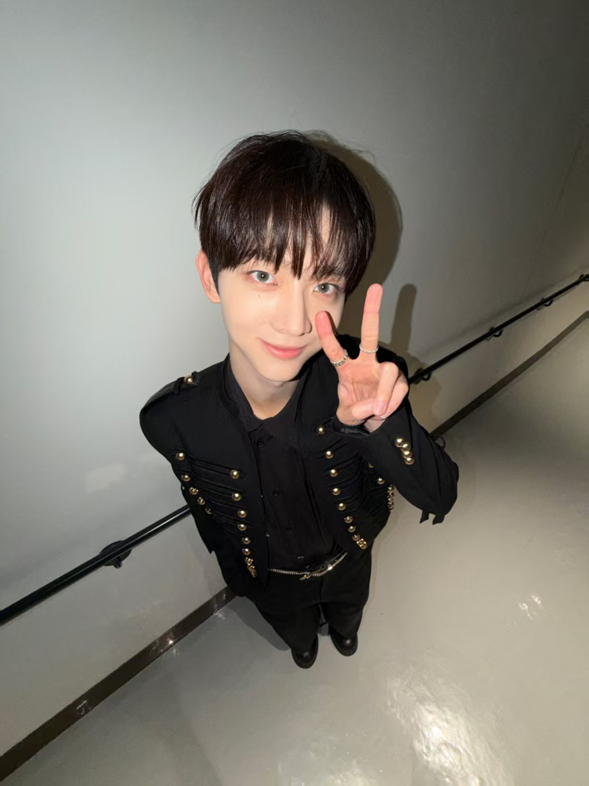
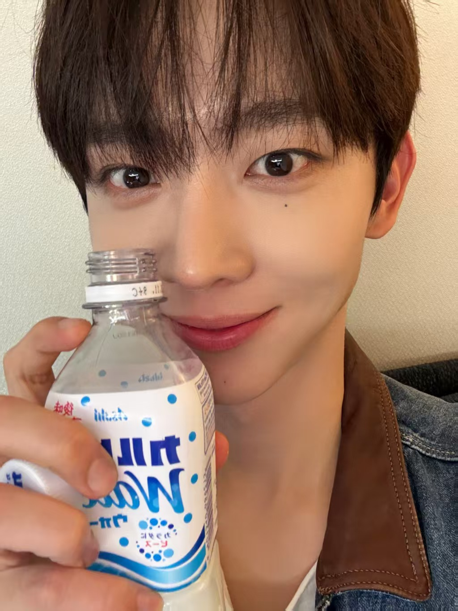
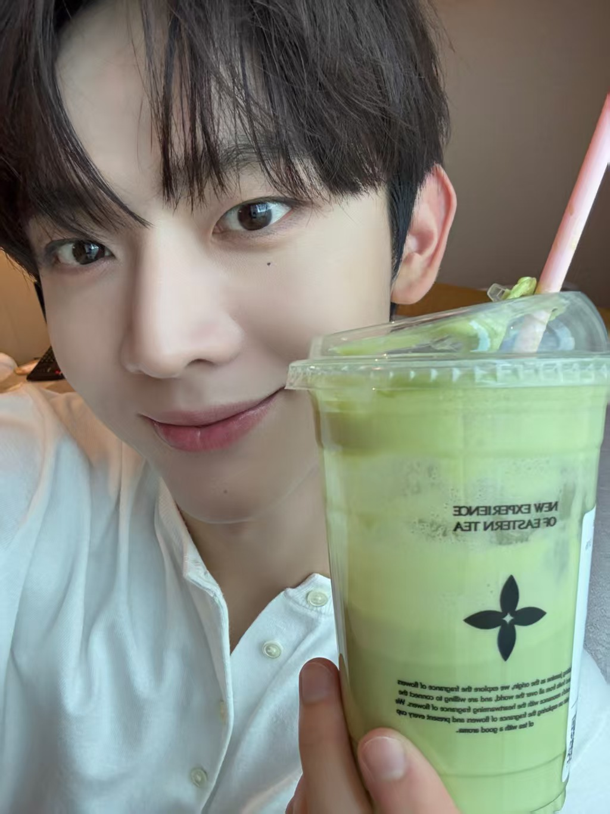
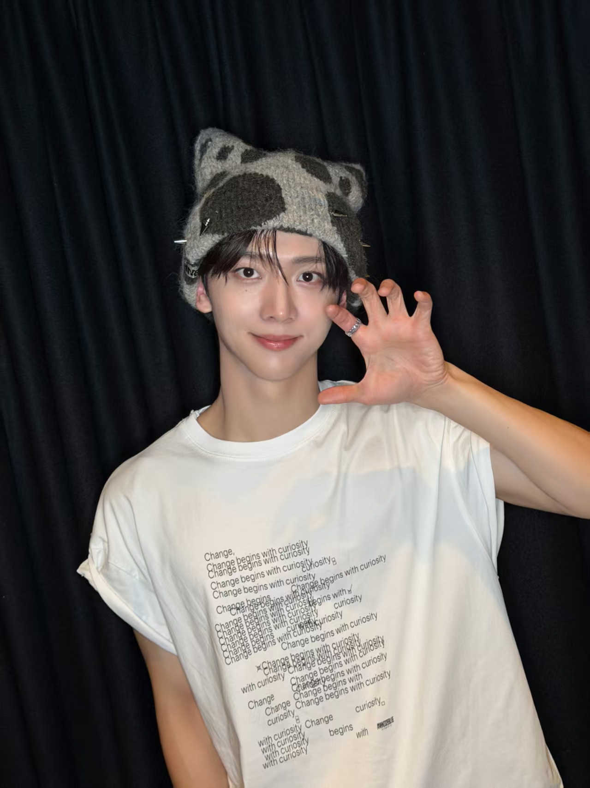

二.一些tmi
1. 在釜山土生土长，直到上小学为止，为了给乐天巨人队加油经常去棒球场！ 2. 除了唱歌，还迷上了各种运动... 小学的时候参加过射箭部，还参加过足球部！ 除此之外，保龄球、乒乓球、台球、跑步等等也做得好 3. 上小学时因为擅长爬山所以外号是飞鼠🐿️ 4.进入SM的时候也收到了Big Hit的提议，离开SM加入乐华的时候Big Hit出道组选角组也联系过...

三.喜好
可尔必思(饮料)梦男一枚，看到可尔必思眼睛瞬间会发光。 比较能吃，饭桶一枚，除了胡萝卜没有明确表示不喜欢吃的东西。 泡泡发的很勤，很多时候都是晒今天吃什么，给粉丝推荐晚餐吃什么 很爱小狗，家里面两只漂亮的博美(哥哥核桃妹妹樱桃)。怕猫，但是看到流浪猫还是会买吃的看着它们吃。

四.外号由来
8外号安图生/安小鸟。五官长得像同公司前辈藤的安炯燮(安安),耳朵像李义雄(图图),安图之子简称安图生， 甚至两个人还拍了cha认证过亲缘关系(哪里不对)。。因为唱歌好听，赛时演化出了“安小鸟”的外号。还有个 小故事，当时有的人觉得这个外号不吉利(会被毒哑)，结果二公真的唱破了一个低音，又唱好了所有的高音，这样抬进抬出， 毒哑复宠，反而跟安小鸟对上了，直接痛失本名。。(甚至至今很多人不知道他本名)
五.喜欢的表情
最喜欢的表情是三叶草和爱心。三叶草代表幸 福，他常说"比起幸运更希望你幸福哦"，所以自己设计的官娃，那个大耳朵橡子头上面才会有个三叶草。
六.关于小鸟的一些......
长得很乖很萌一眼优等生大灵珠，实际上是纯血大魔丸绝世大E人。 战绩有:坐个地铁都能跟陌生人随地大小聊;在加拿大路上主动跟人打招呼, 还统计有多少人愿意搭理他;在新加坡环球影城主动逗陌生小孩子玩等等 2头小脸小骨架小，实际上是180大膀子薄肌男，甚至给自己的肌肉起名字(手臂肌肉是罗 密欧，还有朱丽叶、米开朗基罗、伊丽莎白等等忘记是哪块肌肉了)，在舞台也很大方的给 人看，但是腹肌胸肌没什么看头哈哈哈哈哈(孩子别看是恶评) 3前SM练习生，大约19年离开前司，同期有李松河等等，还被人拍到一起看前辈演唱会。当 年有个男团计划流产，走了一大批练习生。当时年纪也小，觉得练习生生活太辛苦，直接回家当了一年半左右的素人。 后来在釜山被乐华和bighit挖掘，进了乐华。